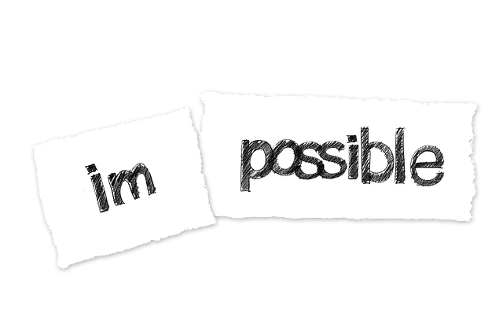

Tough times are an opportunity
There are times when we have to take tough decisions and uncertainties try to stop us from choosing what we think is best for us. We are scared that if we choose to take a different path, we may have to face a failure. If you often find yourself in such situations, don't worry. Such times are really an opportunity. An opportunity which our life gives us, It is our chance to make a choice to attain the state of unextinguishable courage. Here are 3 simple steps to attain unextinguishable courage.
Step-1 Understand your fears
The first step towards attaining unextinguishable courage is an understanding that we're afraid. All of us fear something in different situations and at different times.
A student fears failure in exam
A sales-man fears losing the job if he sells not
An entrepreneur has his own fears, what if this project doesn't work?
All of us have our own fears but what we need to understand is the "origin of the fear", by understanding of fear, I mean that we understand that what has caused such scary thoughts in our mind. What is responsible for our fear? And then only we can go on to the next step in discovery.
Step-2 A Decision not to stop
Now when we understand our fears, we are one step closer towards attaining infinite courage. How do we know that we understand our fears
A student knows his FEAR is because he has not been studying well in the past
A sales man knows he has not made any sales in the last week
An entrepreneur knows what is missing in his projects
After having understood the causes of our fear, this is the time to take a decision to not stop until we have reached the destination. The decision to stop not is what the starting point is and this is where our courage comes into play.
Nelson Mandela took the decision to fight for his country and spent 27 year behind the bars
Bhagat Singh choose fight for his country and he was punished death at the age of only 23
Fighting our fears is like challenging someone in their own game and therefore it's never going to be easy. But this is where we start to become courageous. Our decision to keep going when everything seems dark is what makes us courageous. Courage is not the absence of fear, it's the triumph over it.
Step-3 Refill your courage tank everyday
We become courageous not because we get some extra-ordinary powers like superman. We become courageous because of a cause which constantly drives us. This could be love, passion, determination to succeed, or zeal to invent something. If we don't remind ourself of our cause everyday our mind may start asking questions like:
student: I studied and still didn't get good grades
salesman: I sold goods and still didn't get bonus
entrepreneur: I have skills, why don't I take up rewarding job
What we need to understand is that some things just take time. And real courage is not in winning all the times instead it lies in choosing a path and walking on it. Our success or failures are only outcomes of our actions. Real courage lies in choosing what actions we take. If our actions are what we want them to be, we hardly ever think of outcomes.
Dare to discover your way
People who attain unextinguishable courage really don't wait for a guide to tell them what the correct path is for them. Instead they just discover their own path and set examples for others. They have the courage to walk on the roads of uncertainty because they know at the end lies their destination.
Always remember you get life once, "dare to live it before it's over"
 he who says he can and he who says he can't are both usually right